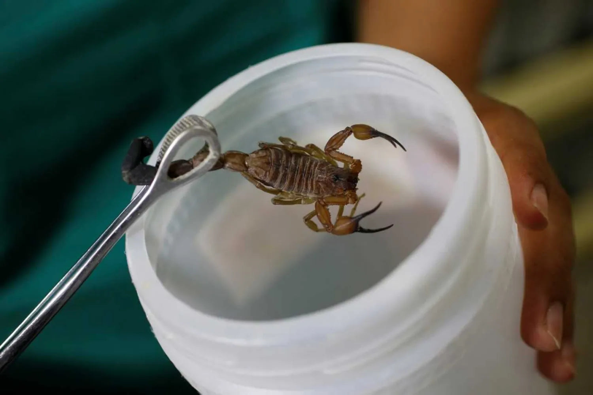
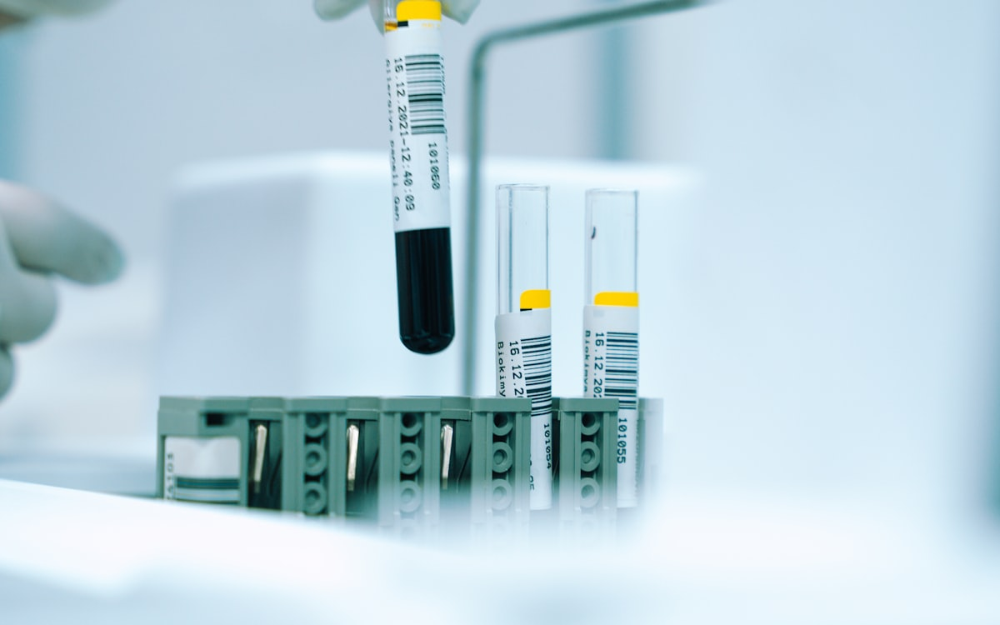
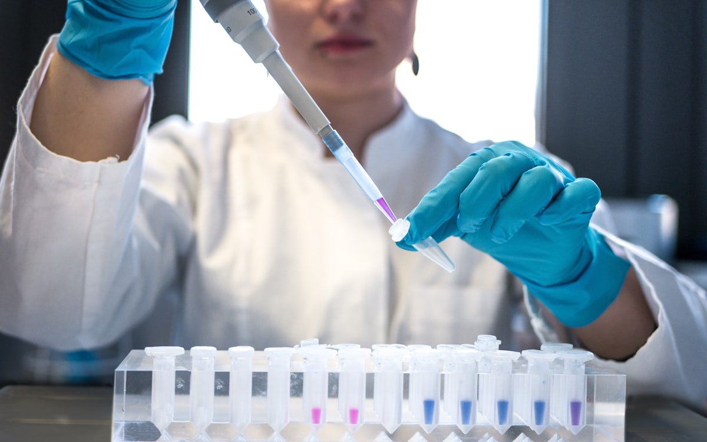
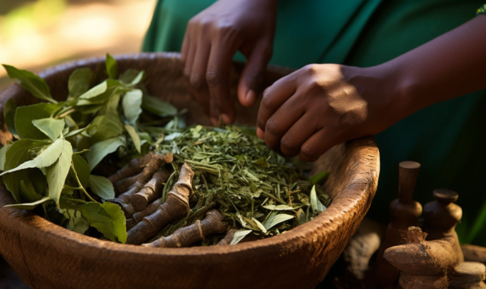

Structured research across four scientific domains
A Research & Development programme is a structured, systematic initiative to acquire new knowledge and develop innovative therapies. Champions applies this methodology across oncology, regenerative medicine, haematology and global-health policy, each involving genuine technical uncertainty and reproducible investigation.
Oncology & Cancer Therapeutics
Our primary R&D domain, tumour microenvironment dynamics, next-generation treatment strategies, and novel pharmacotherapy across haematological and solid malignancies.
Regenerative Medicine
Translational research into mesenchymal and haematopoietic stem-cell applications, tissue repair and cellular engineering platforms.
Haematology
Sickle cell disease management, gene-editing strategies and disease-modifying pharmacotherapy bridging symptom management and functional cure.
Global Health & Policy
Regulatory science, healthcare-infrastructure analysis and evidence-based policy frameworks addressing therapeutic access in Nigeria and emerging markets.
What a research and development programme means at Champions
An R&D programme is a structured, systematic effort to build new knowledge, develop new products and services, or make real improvements to how things are done. Good R&D resolves genuine scientific and technical uncertainty, and it sits at the centre of how Champions works.
We run it as a continuous line of work, from the first literature review through to the point where a therapy can reach a patient. Every step is documented, reproducible, and held to NAFDAC, ISO and international standards, so the evidence stands up to outside scrutiny.

Three phases, from question to patient
1. Research
We gather foundational knowledge through systematic scientific enquiry: literature review, laboratory investigation, hypothesis testing and evidence synthesis, so we understand the biology and the clinical basis of a disease before anything else.
2. Development
We apply what we learn to design new therapeutic products, clinical processes and treatment pathways, turning laboratory findings into candidates ready for preclinical and clinical evaluation.
3. Refinement
We test and refine formulations, methods and prototypes through structured trials, clinical studies and regulatory-grade validation, building the evidence needed to bring safe, effective therapies to patients.
Six things that make it genuine R&D
We hold our programmes to the same criteria used to judge serious research anywhere: not activity for its own sake, but work that meets a real standard.
Novelty
Moving past what is already known rather than repeating it.
Creativity
Original scientific thinking applied to hard problems.
Systematic method
Structured, documented processes anyone can follow and check.
Transferability
Findings that are shareable and reproducible by others.
Technical uncertainty
Resolving real unknowns, where the outcome is not guaranteed.
Real-world impact
Creating measurable value for patients and the health system.
Active research programmes
Peer-reviewed evidence syntheses and translational reviews, for research and informational purposes, grounded in reproducible scientific evidence.

Advanced Stem Cell Research & Treatment Pathways
Mesenchymal and haematopoietic stem-cell applications in oncology and regenerative medicine.
Read study
Scorpion Venom, Oncology Research Compound
Bioactive peptides and Chlorotoxin (Tumor Paint) in cancer-selective therapeutics.
Read study
Sickle Cell: From Management to Functional Cure
Gene editing, stem-cell transplantation and disease-modifying pharmacotherapy.
Read study
Bioactive Peptide Therapeutics Research Initiative
Clinical potential, safety and translational applications of bioactive peptide compounds.
Read study
Phytocannabinoids in Traditional Nigerian Medicine
Scientific validation of phytocannabinoids and indigenous medicine within regulatory frameworks.
Read study
Border Securitization & Social Construction
Interdisciplinary analysis of contemporary border fortification and territorial governance.
Read studyFrom discovery to patient access
Literature review
Systematic review of peer-reviewed research to map what is known, where the gaps are, and which questions matter most across every therapeutic area.
International collaboration
Working with accredited laboratories, clinical research centres and global pharmaceutical partners to speed up development and strengthen our results.
Regulatory alignment
Keeping all R&D in line with NAFDAC, ISO and international standards, so the work carries the documentation needed for clinical and commercial use.
Patient access
Turning research into real clinical pathways, physician education and access frameworks that put improvements in front of patients at scale.
Why structured R&D matters
For Champions Pharmaceuticals, structured R&D is the engine that drives our mission, advancing innovative therapies in oncology, regenerative medicine and haematologic disease, with a specific commitment to closing treatment gaps for underserved populations in Nigeria and across Africa.